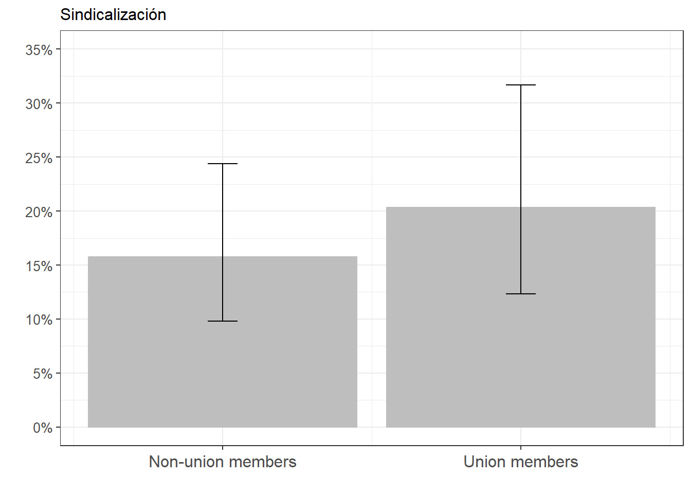
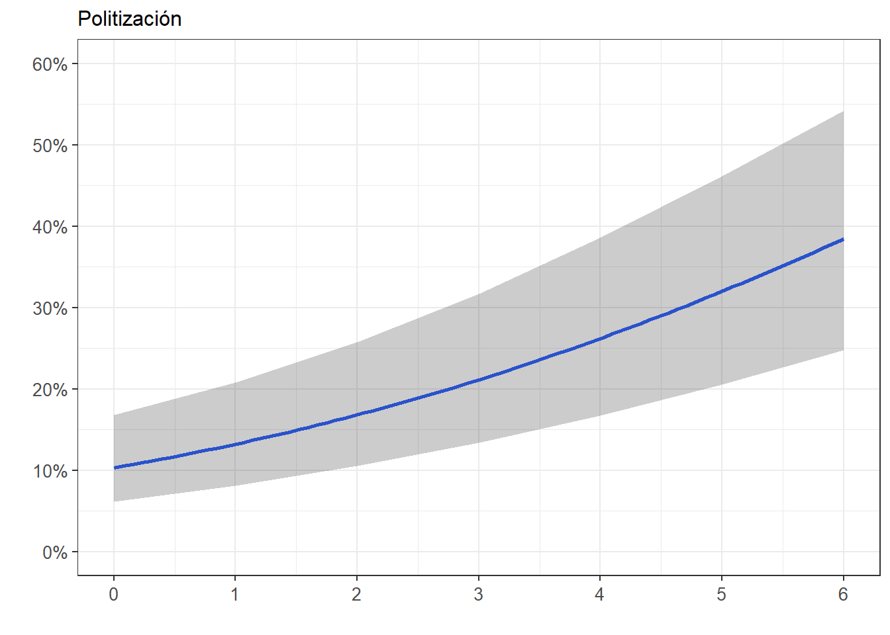
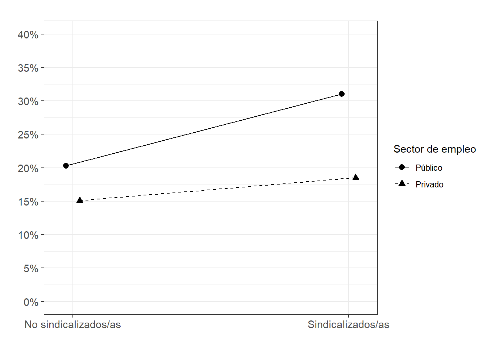
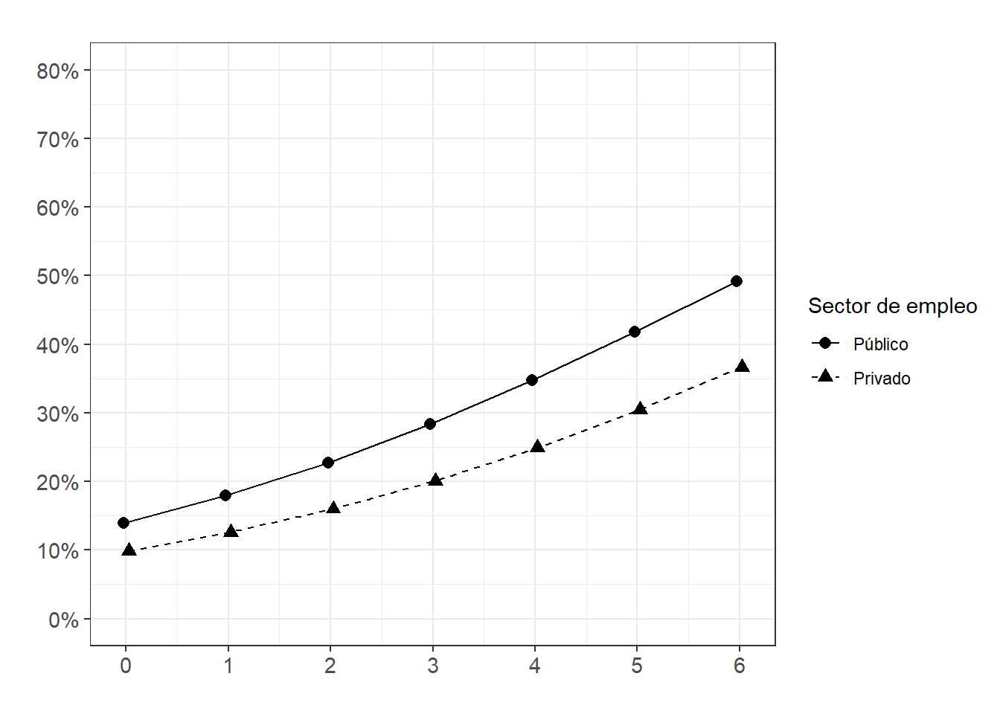

pacman::p_load(tidyr,
dplyr,
sjPlot,
sjmisc,
psych,
texreg,
haven,
ggplot2,
lmtest,
DescTools)Práctica 6 Regresión logística y Probabilidades predichas
Metodología I - Magíster en Ciencias Sociales
Presentación
La Encuesta Mundial de Valores (EMV) o World Values Survey WVS es un proyecto global de investigación social que explora los valores y opiniones de la gente, cómo estos cambian con el tiempo, y su impacto social y político. Desde 1981 una red mundial de científicos sociales y politólogos llevan a cabo esta investigación, haciendo encuestas nacionales representativas en casi 100 países. La WVS es la única fuente de datos empíricos sobre actitudes y valores humanos que abarca a la mayoría de la población mundial (casi el 90%).
Objetivo
En el ejemplo de esta práctica, que utiliza solo casos para Chile entre 2005 y 2022, se intentará responder la pregunta ¿existe una relación entre la afiliación a sindicatos y la participación en marchas?
Debido a la naturaleza de la variable dependiente participación en marchas (si/no), el objetivo de esta práctica es estimar modelos de regresión logística binaria.
Librerías
Datos
WVS_2005_2022_Chl<- readRDS(file = "../files/data/WVS_2005_2022_Chl.rds")#Cargamos la base de datos desde internet
load(url("https://github.com/Kevin-carrasco/metod1-MCS/raw/main/files/data/WVS_2005_2022_Chl.RData"))Explorar datos
summary(WVS_2005_2022_Chl) #con comando de paquete haven Unionized demonstr_dummy petition_dummy Wave
Min. :0.0000 Min. :0.0000 Min. :0.0000 Wave 5:373
1st Qu.:0.0000 1st Qu.:0.0000 1st Qu.:0.0000 Wave 6:516
Median :0.0000 Median :0.0000 Median :0.0000 Wave 7:568
Mean :0.1984 Mean :0.2073 Mean :0.1846
3rd Qu.:0.0000 3rd Qu.:0.0000 3rd Qu.:0.0000
Max. :1.0000 Max. :1.0000 Max. :1.0000
pol_pos pol_pos_left politicization civic_involvement
left :360 Min. :0.0000 Min. :0.00 Min. :0.0000
center :509 1st Qu.:0.0000 1st Qu.:1.00 1st Qu.:0.0000
right :215 Median :0.0000 Median :2.00 Median :0.0000
Not identified: 0 Mean :0.2471 Mean :1.95 Mean :0.6905
NA's :373 3rd Qu.:0.0000 3rd Qu.:3.00 3rd Qu.:1.0000
Max. :1.0000 Max. :6.00 Max. :3.0000
X003 age Female Educ private_sector
Min. :18.00 1:128 Min. :0.0000 1:123 Min. :0.0000
1st Qu.:31.00 2:341 1st Qu.:0.0000 2:924 1st Qu.:1.0000
Median :41.00 3:400 Median :0.0000 3:410 Median :1.0000
Mean :41.44 4:352 Mean :0.4084 Mean :0.8593
3rd Qu.:50.00 5:188 3rd Qu.:1.0000 3rd Qu.:1.0000
Max. :80.00 6: 48 Max. :1.0000 Max. :1.0000
gvt_resp tax_rich unempl_aid state_inc_eq
Min. : 1.000 Min. : 1.000 Min. : 1.000 Min. : 1.000
1st Qu.: 5.000 1st Qu.: 5.000 1st Qu.: 5.000 1st Qu.: 5.000
Median : 6.000 Median : 7.000 Median : 7.000 Median : 7.000
Mean : 6.457 Mean : 6.446 Mean : 7.103 Mean : 6.689
3rd Qu.: 9.000 3rd Qu.: 9.000 3rd Qu.:10.000 3rd Qu.: 9.000
Max. :10.000 Max. :10.000 Max. :10.000 Max. :10.000
NA's :16 NA's :87 NA's :62 NA's :439 describe(WVS_2005_2022_Chl) #con comando de paquete psych vars n mean sd median trimmed mad min max range
Unionized 1 1457 0.20 0.40 0 0.12 0.00 0 1 1
demonstr_dummy 2 1457 0.21 0.41 0 0.13 0.00 0 1 1
petition_dummy 3 1457 0.18 0.39 0 0.11 0.00 0 1 1
Wave* 4 1457 2.13 0.79 2 2.17 1.48 1 3 2
pol_pos* 5 1084 1.87 0.72 2 1.83 1.48 1 3 2
pol_pos_left 6 1457 0.25 0.43 0 0.18 0.00 0 1 1
politicization 7 1457 1.95 1.61 2 1.81 1.48 0 6 6
civic_involvement 8 1457 0.69 0.98 0 0.49 0.00 0 3 3
X003 9 1457 41.44 12.25 41 41.13 13.34 18 80 62
age* 10 1457 3.19 1.27 3 3.18 1.48 1 6 5
Female 11 1457 0.41 0.49 0 0.39 0.00 0 1 1
Educ* 12 1457 2.20 0.57 2 2.23 0.00 1 3 2
private_sector 13 1457 0.86 0.35 1 0.95 0.00 0 1 1
gvt_resp 14 1441 6.46 2.58 6 6.61 2.97 1 10 9
tax_rich 15 1370 6.45 2.72 7 6.64 2.97 1 10 9
unempl_aid 16 1395 7.10 2.53 7 7.37 2.97 1 10 9
state_inc_eq 17 1018 6.69 2.60 7 6.90 2.97 1 10 9
skew kurtosis se
Unionized 1.51 0.28 0.01
demonstr_dummy 1.44 0.08 0.01
petition_dummy 1.62 0.64 0.01
Wave* -0.24 -1.37 0.02
pol_pos* 0.20 -1.04 0.02
pol_pos_left 1.17 -0.63 0.01
politicization 0.56 -0.43 0.04
civic_involvement 1.31 0.51 0.03
X003 0.21 -0.63 0.32
age* 0.15 -0.66 0.03
Female 0.37 -1.86 0.01
Educ* -0.02 -0.28 0.01
private_sector -2.06 2.26 0.01
gvt_resp -0.32 -0.71 0.07
tax_rich -0.34 -0.81 0.07
unempl_aid -0.62 -0.43 0.07
state_inc_eq -0.40 -0.61 0.08Regresiones logísticas
El punto de partida es transformación de los coeficientes 𝛽 en coeficientes logit:
Se conoce como “logit” a la transformación logarítmica de los odds (traducidos comúnmente como “chances”)
¿Qué son los odds? Una razón de probabilidades
Por lo tanto, para estimar probabilidades a través de una regresión logística hay que seguir estos pasos:
- Estimar los odds o razón de probabilidades
- Estimar odds ratios (razones entre odds)
- Aplicar una transformación logarítmica a esos odds ratios para obtener coeficientes logit
- Calcular las probabilidades
Tabla de contingencia bivariado: sindicalización / participación en marchas
WVS_2005_2022_Chl <- WVS_2005_2022_Chl %>%
mutate(Unionized = labelled(.$Unionized,c("No"=0,"Sí"=1)),
demonstr_dummy = labelled(.$demonstr_dummy,c("No"=0,"Sí"=1)))
WVS_2005_2022_Chl <- as.data.frame(WVS_2005_2022_Chl) #para que la base quede como data frame (necesario para las figuras)
frq(WVS_2005_2022_Chl$Unionized)x <numeric>
# total N=1457 valid N=1457 mean=0.20 sd=0.40
Value | Label | N | Raw % | Valid % | Cum. %
-----------------------------------------------
0 | No | 1168 | 80.16 | 80.16 | 80.16
1 | Sí | 289 | 19.84 | 19.84 | 100.00
<NA> | <NA> | 0 | 0.00 | <NA> | <NA>frq(WVS_2005_2022_Chl$demonstr_dummy)x <integer>
# total N=1457 valid N=1457 mean=0.21 sd=0.41
Value | Label | N | Raw % | Valid % | Cum. %
-----------------------------------------------
0 | No | 1155 | 79.27 | 79.27 | 79.27
1 | Sí | 302 | 20.73 | 20.73 | 100.00
<NA> | <NA> | 0 | 0.00 | <NA> | <NA>sjPlot::tab_xtab(var.col = WVS_2005_2022_Chl$Unionized,
var.row = WVS_2005_2022_Chl$demonstr_dummy,
title = "Participación en marchas según afiliación sindical",
show.col.prc = TRUE,
value.labels = TRUE,
encoding = "UTF-8")Warning: `valueLables` needs to be a `list`-object.| demonstr_dummy | Unionized | Total | |
|---|---|---|---|
| No | Sí | ||
| No | 941 80.6 % |
214 74 % |
1155 79.3 % |
| Sí | 227 19.4 % |
75 26 % |
302 20.7 % |
| Total | 1168 100 % |
289 100 % |
1457 100 % |
| χ2=5.598 · df=1 · φ=0.064 · p=0.018 | |||
Odds
\[Odds_{participar} = \frac{0.207}{0.793} = 0.26\]
Las chances de participar en una marcha son de 0,26, respecto a las chances de no participar
En otras palabras: por cada 1 persona, hay sólo 0,26 personas que participan en marchas.
O más intuitivamente, por cada 100 personas, hay sólo 26 personas que participan
¿Cambian las chances de participar según se esté afiliado/a a un sindicato
\[Odds_{sindical} = \frac{0.26}{0.74} = 0.35\]
\[Odds_{no.sindical} = \frac{0.194}{0.806} = 0.24\]
¿Cómo se interpretan los odds?
Valores bajo 1 indican que las chances de que ocurra un evento son negativas
Valores iguales a 1 indican chances iguales
Valores sobre 1 indican chances positivas
Odds ratios (razones de chances)
Cálculo que permite reflejar asociación entre dos variables dicotómicas, a partir de una comparación entre chances
Siguiendo con el ejemplo anterior, ¿tienen los/as sindicalizados más chances de participar en marchas que quienes no están sindicalizados/as?
\[OR = \frac{P_{sindical}/(1-P_{sindical})}{P_{no.sindical}/(1-P_{no.sindical})}\]
\[OR = \frac{0.26/0.74}{0.194/0.806} = \frac{0.35}{0.24} = 1.46\]
Las chances de participar en marchas de los/as sindicalizados/as son 1,5 veces más que las de quienes no están sindicalizados/as
Implicancias:
- El odds ratio o razones de chances es útil porque nos permite expresar en un número la relación entre dos variables categóricas
- En las regresiones logísticas, el odds ratio es la primera manera de aproximarnos a relación entre variables
- Sin embargo, falta un paso más necesario para construir modelos de regresión logística
Logit
Es una unidad de medida de la relación entre dos variables (VD: dicotómica), que en regresión logística se calcula a partir del logaritmo natural de los odds
Esta transformación logarítmica es la base de la estimación de parámetros en la regresión logística:
La mejor combinación lineal de predictores no se obtiene a través de MCO, sino a través del procedimiento de máxima verosimilitud
- A diferencia de los odds ratio, los coeficientes logit tienen valores que van de –a +
Modelo de probabilidad lineal
Primero, solo para comparación, estimamos un modelo de probabilidad lineal.
m1mpl <- lm(demonstr_dummy ~ Unionized + Wave, data = WVS_2005_2022_Chl)htmlreg(m1mpl,
custom.model.names = "Modelo de Prob Lineal",
digits = 3,
stars = c(0.001, 0.01, 0.05, 0.1),symbol = "†")| Modelo de Prob Lineal | |
|---|---|
| (Intercept) | 0.167*** |
| (0.022) | |
| Unionized | 0.072** |
| (0.027) | |
| WaveWave 6 | 0.079** |
| (0.027) | |
| WaveWave 7 | -0.005 |
| (0.027) | |
| R2 | 0.013 |
| Adj. R2 | 0.011 |
| Num. obs. | 1457 |
| ***p < 0.001; **p < 0.01; *p < 0.05; †p < 0.1 | |
Modelo de regresión logística
m0log <- glm(demonstr_dummy~ Unionized, data = WVS_2005_2022_Chl, family = "binomial"(link = "logit"))
m1log <- glm(demonstr_dummy~ Unionized + Wave, data = WVS_2005_2022_Chl, family = "binomial"(link = "logit"))
#nota: "logit" viene por defecto en la opción "binomial", por eso no es necesario
#incluirla explícitamente en el código (tal como lo hago en los modelos sgtes)
m2log <- glm(demonstr_dummy~ Unionized + Female + X003 + Educ + private_sector + Wave, data = WVS_2005_2022_Chl,family = "binomial")
m3log <- glm(demonstr_dummy~ Unionized + Female + X003 + Educ + private_sector + politicization + Wave, data = WVS_2005_2022_Chl,family = "binomial")htmlreg(list(m1mpl, m1log,m2log,m3log),
custom.model.names = c("M1 (m prob lineal)","M1 (log odds)","M2 (log odds)","M3 (log odds)"),
digits = 3,
stars = c(0.001, 0.01, 0.05, 0.1),symbol = "†")| M1 (m prob lineal) | M1 (log odds) | M2 (log odds) | M3 (log odds) | |
|---|---|---|---|---|
| (Intercept) | 0.167*** | -1.601*** | -1.023* | -1.379** |
| (0.022) | (0.140) | (0.424) | (0.437) | |
| Unionized | 0.072** | 0.418** | 0.390* | 0.312† |
| (0.027) | (0.155) | (0.157) | (0.161) | |
| WaveWave 6 | 0.079** | 0.470** | 0.498** | 0.496** |
| (0.027) | (0.168) | (0.171) | (0.174) | |
| WaveWave 7 | -0.005 | -0.031 | -0.102 | -0.121 |
| (0.027) | (0.174) | (0.181) | (0.184) | |
| Female | -0.020 | 0.100 | ||
| (0.136) | (0.139) | |||
| X003 | -0.007 | -0.012* | ||
| (0.006) | (0.006) | |||
| Educ2 | 0.042 | -0.053 | ||
| (0.268) | (0.272) | |||
| Educ3 | 0.521† | 0.259 | ||
| (0.283) | (0.289) | |||
| private_sector | -0.516** | -0.445* | ||
| (0.175) | (0.180) | |||
| politicization | 0.282*** | |||
| (0.042) | ||||
| R2 | 0.013 | |||
| Adj. R2 | 0.011 | |||
| Num. obs. | 1457 | 1457 | 1457 | 1457 |
| AIC | 1475.887 | 1460.059 | 1415.850 | |
| BIC | 1497.024 | 1507.616 | 1468.691 | |
| Log Likelihood | -733.944 | -721.030 | -697.925 | |
| Deviance | 1467.887 | 1442.059 | 1395.850 | |
| ***p < 0.001; **p < 0.01; *p < 0.05; †p < 0.1 | ||||
En el Modelo 1 (M1), el log-odds de participación en marchas para afiliados a sindicatos aumenta en 0.418 en comparación con los no sindicalizados (p<0.01). Este resultado mantiene su significación estadística en el Modelo 2 y baja su significación a p<0.1 en el Modelo 3, al controlar por las demás variables independientes.
En el Modelo 2, En comparación a los/as trabajadores/as del sector público (categoría de referencia), el log-odds de participación en marchas para los/as del sector privado disminuye en 0,52 (p < 0,01), manteniendo el resto de variables constantes.
En el Modelo 3, por cada unidad de aumento en la escala de politización, el log-odds de participación en marchas aumenta en 0,28 (p < 0,001), manteniendo el resto de las variables constantes.
Problemas de interpretación
A pesar de sus ventajas, los coeficientes logit son difíciles de interpretar:
Los coef. logit son el resultado de una transformación de la escala original
Ellos no muestran directamente probabilidades
Entonces: Volver a la escala original de odds ratio mediante la exponenciación de los coeficientes (la función exponencial es la inversa del logaritmo)
\[logit_x = log(odds)\]
\[e^{logit} = odds_x\]
\[e^{0.39} = odds_x = 1.477\]
Las chances (odds) de participar en marchas de los/as sindicalizados/as son 1,5 veces más que las de quienes no están sindicalizados/as, controlando por las otras variables incluidas en el modelo
Estimación de odds ratios
exp(coef(m1log)) #comando básico(Intercept) Unionized WaveWave 6 WaveWave 7
0.2016888 1.5185264 1.5996549 0.9694021 ### Cálculo de OR para cada modelo
m0log_OR <- exp(coef(m0log))
m1log_OR <- exp(coef(m1log))
m2log_OR <- exp(coef(m2log))
m3log_OR <- exp(coef(m3log))##Odds ratios en tabla de texreg
htmlreg(list(m1log,m2log,m3log),
override.coef = list(m1log_OR,m2log_OR,m3log_OR), # Sobreescribir coeficientes
custom.model.names = c("m1 (OR)","m2 (OR)","m3 (OR)"),
digits = 3,
stars = c(0.001, 0.01, 0.05, 0.1),symbol = "†")| m1 (OR) | m2 (OR) | m3 (OR) | |
|---|---|---|---|
| (Intercept) | 0.202*** | 0.359* | 0.252** |
| (0.140) | (0.424) | (0.437) | |
| Unionized | 1.519** | 1.477* | 1.366† |
| (0.155) | (0.157) | (0.161) | |
| WaveWave 6 | 1.600** | 1.646** | 1.642** |
| (0.168) | (0.171) | (0.174) | |
| WaveWave 7 | 0.969 | 0.903 | 0.886 |
| (0.174) | (0.181) | (0.184) | |
| Female | 0.980 | 1.106 | |
| (0.136) | (0.139) | ||
| X003 | 0.993 | 0.988* | |
| (0.006) | (0.006) | ||
| Educ2 | 1.042 | 0.949 | |
| (0.268) | (0.272) | ||
| Educ3 | 1.684† | 1.296 | |
| (0.283) | (0.289) | ||
| private_sector | 0.597** | 0.641* | |
| (0.175) | (0.180) | ||
| politicization | 1.326*** | ||
| (0.042) | |||
| AIC | 1475.887 | 1460.059 | 1415.850 |
| BIC | 1497.024 | 1507.616 | 1468.691 |
| Log Likelihood | -733.944 | -721.030 | -697.925 |
| Deviance | 1467.887 | 1442.059 | 1395.850 |
| Num. obs. | 1457 | 1457 | 1457 |
| ***p < 0.001; **p < 0.01; *p < 0.05; †p < 0.1 | |||
#Nota: errores estándares en esta tabla NO tienen sentido (no están calculados a partir de OR, sino de log odds)
#Es mejor no reportarlos si solo se van a presentar odds ratiosSin embargo, los coeficientes de un modelo de reg. logística (log-odds u odds-ratios) no son comparables con los coeficientes de otro modelo
Cálculo de probabilidades predichas
# Tabla básica: sólo sindicalizacion como vble independ
htmlreg(m0log,
custom.model.names = c("m0 (log odds)"),
digits = 3,
stars = c(0.001, 0.01, 0.05, 0.1),symbol = "†")| m0 (log odds) | |
|---|---|
| (Intercept) | -1.422*** |
| (0.074) | |
| Unionized | 0.374* |
| (0.153) | |
| AIC | 1485.340 |
| BIC | 1495.908 |
| Log Likelihood | -740.670 |
| Deviance | 1481.340 |
| Num. obs. | 1457 |
| ***p < 0.001; **p < 0.01; *p < 0.05; †p < 0.1 | |
A partir de este modelo se pueden predecir log-odds y, más importante aún, probabilidades para personas con distintos atributos controlados en el modelo (ej., sindicalizadas o no)
\[logit(prob.marcha) = 𝛼+ 𝛽_1X_1 \]
\[logit(prob.marcha)_{sindical} = -1.422 + (0.374 * Unionized=1) = -1.048 \]
\[logit(prob.marcha)_{no.sindical} = -1.422 + (0.374 * Unionized=0) = -1.422 \]
Este “puntaje predicho” (log-odds) no tiene interpretación, por lo que hay que pasarlo a Odds
\[Odds_x = e^{𝛼+𝛽_jX_j}\]
\[Odds_{sindicalizados} = e^{-1.048} = 0.35\]
\[Odds_{no.sindicalizados} = e^{-1.422} = 0.24\]
Finalmente, habiendo calculado los odds para cada tipo de persona se pueden calcular sus probabilidades predichas
\[p = \frac{e^{𝛼+𝛽_jX_j}}{1+e^{𝛼+𝛽_jX_j}} = \frac{odds_{xj}}{1+odds_{xj}}\]
\[p_{sindicalizados} = \frac{0.35}{1+0.35} = \frac{0.35}{1.35} = 0.26\]
\[p_{no.sindicalizados} = \frac{0.24}{1+0.24} = \frac{0.24}{1.24} = 0.19\]
La probabilidad de que un/a sindicalizado participe en marchas es del 26%, mientras que la probabilidad de que alguien que no esté sindicalizado/a es del 19%
Cálculo de probabilidades predichas en R
Paquete ggeffects de R: últil para estimar probabilidades predichas a partir de modelos de regresión logísticas
Combinado con ggplot2, se pueden generar gráficos que muestran de modo más intuitivo la relación entre variables
Gráfico de probabilidades predichas para sindicalizados/as y no sindicalizados/as
FigSind_1_Prob <- ggeffects::ggpredict(m3log, terms = c("Unionized")) %>%
ggplot(aes(x=x, y=predicted)) +
geom_bar(stat="identity", color="grey", fill="grey")+
geom_errorbar(aes(ymin = conf.low, ymax = conf.high), width=.1) +
labs(title="Sindicalización", x = "", y = "") +
theme_bw() +
theme(plot.title = element_text(size = 12),
axis.text.x = element_text(angle = 0, vjust = 0.5, size = 12),
axis.text.y = element_text(vjust = 0.5, size = 10)) +
scale_x_continuous(name = "",
breaks = c(0,1),
labels = c("Non-union members", "Union members")) +
scale_y_continuous(limits = c(0,0.35),
breaks = seq(0,0.35, by = 0.05),
labels = scales::percent_format(accuracy = 1L))
FigSind_1_Prob
Gráfico de probabilidades predichas para variable politización
FigPolit_1_Prob<- ggeffects::ggpredict(m3log, terms="politicization") %>%
ggplot(mapping=aes(x = x, y=predicted)) +
labs(title="Politización", x = "", y = "")+
theme_bw() +
geom_smooth()+
geom_ribbon(aes(ymin = conf.low, ymax = conf.high), alpha = .2, fill = "black") +
theme(plot.title = element_text(size = 12),
axis.text.x = element_text(angle = 0, vjust = 0.5, size = 10),
axis.text.y = element_text(vjust = 0.5, size = 10))+
scale_x_continuous(breaks = seq(0,6, by = 1))+
scale_y_continuous(limits = c(0,0.6), breaks=seq(0,0.6, by = 0.1),
labels = scales::percent_format(accuracy = 1L))
FigPolit_1_Prob`geom_smooth()` using method = 'loess' and formula = 'y ~ x'
Bondad de ajuste (comando de paquete lmtest)
- Razón de verosimilitudes
anova(m1log, m2log, test = "Chisq")Analysis of Deviance Table
Model 1: demonstr_dummy ~ Unionized + Wave
Model 2: demonstr_dummy ~ Unionized + Female + X003 + Educ + private_sector +
Wave
Resid. Df Resid. Dev Df Deviance Pr(>Chi)
1 1453 1467.9
2 1448 1442.1 5 25.828 9.635e-05 ***
---
Signif. codes: 0 '***' 0.001 '**' 0.01 '*' 0.05 '.' 0.1 ' ' 1anova(m2log, m3log, test = "Chisq") Analysis of Deviance Table
Model 1: demonstr_dummy ~ Unionized + Female + X003 + Educ + private_sector +
Wave
Model 2: demonstr_dummy ~ Unionized + Female + X003 + Educ + private_sector +
politicization + Wave
Resid. Df Resid. Dev Df Deviance Pr(>Chi)
1 1448 1442.1
2 1447 1395.8 1 46.21 1.063e-11 ***
---
Signif. codes: 0 '***' 0.001 '**' 0.01 '*' 0.05 '.' 0.1 ' ' 1lrtest(m1log, m2log) #likelihood ratio test / Prueba de razón de verosimilitud (comparación m1-m2)Likelihood ratio test
Model 1: demonstr_dummy ~ Unionized + Wave
Model 2: demonstr_dummy ~ Unionized + Female + X003 + Educ + private_sector +
Wave
#Df LogLik Df Chisq Pr(>Chisq)
1 4 -733.94
2 9 -721.03 5 25.828 9.635e-05 ***
---
Signif. codes: 0 '***' 0.001 '**' 0.01 '*' 0.05 '.' 0.1 ' ' 1lrtest(m2log, m3log) #likelihood ratio test / Prueba de razón de verosimilitud (comparación m2-m3)Likelihood ratio test
Model 1: demonstr_dummy ~ Unionized + Female + X003 + Educ + private_sector +
Wave
Model 2: demonstr_dummy ~ Unionized + Female + X003 + Educ + private_sector +
politicization + Wave
#Df LogLik Df Chisq Pr(>Chisq)
1 9 -721.03
2 10 -697.92 1 46.21 1.063e-11 ***
---
Signif. codes: 0 '***' 0.001 '**' 0.01 '*' 0.05 '.' 0.1 ' ' 1- Pseudo R2 (McFadden)
m1log_R2<-DescTools::PseudoR2(m1log)
m2log_R2<-DescTools::PseudoR2(m2log)
m3log_R2<-DescTools::PseudoR2(m3log)#Misma tabla, en log odds, con Pseudo R2
htmlreg(list(m1log,m2log,m3log),
custom.model.names = c("m1 (log odds)","m2 (log odds)","m3 (log odds)"),
custom.gof.rows=list("Pseudo R2" = c(m1log_R2, m2log_R2,m3log_R2)),
digits = 3,
stars = c(0.001, 0.01, 0.05, 0.1),symbol = "†")| m1 (log odds) | m2 (log odds) | m3 (log odds) | |
|---|---|---|---|
| (Intercept) | -1.601*** | -1.023* | -1.379** |
| (0.140) | (0.424) | (0.437) | |
| Unionized | 0.418** | 0.390* | 0.312† |
| (0.155) | (0.157) | (0.161) | |
| WaveWave 6 | 0.470** | 0.498** | 0.496** |
| (0.168) | (0.171) | (0.174) | |
| WaveWave 7 | -0.031 | -0.102 | -0.121 |
| (0.174) | (0.181) | (0.184) | |
| Female | -0.020 | 0.100 | |
| (0.136) | (0.139) | ||
| X003 | -0.007 | -0.012* | |
| (0.006) | (0.006) | ||
| Educ2 | 0.042 | -0.053 | |
| (0.268) | (0.272) | ||
| Educ3 | 0.521† | 0.259 | |
| (0.283) | (0.289) | ||
| private_sector | -0.516** | -0.445* | |
| (0.175) | (0.180) | ||
| politicization | 0.282*** | ||
| (0.042) | |||
| Pseudo R2 | 0.013 | 0.030 | 0.061 |
| AIC | 1475.887 | 1460.059 | 1415.850 |
| BIC | 1497.024 | 1507.616 | 1468.691 |
| Log Likelihood | -733.944 | -721.030 | -697.925 |
| Deviance | 1467.887 | 1442.059 | 1395.850 |
| Num. obs. | 1457 | 1457 | 1457 |
| ***p < 0.001; **p < 0.01; *p < 0.05; †p < 0.1 | |||
Efectos de interacción
sindicalizacion - sector privado
m3.1log <- glm(demonstr_dummy~ Unionized + Female + X003 + Educ + private_sector + politicization + Wave + Unionized*private_sector,
data = WVS_2005_2022_Chl,family = "binomial")htmlreg(list(m1log,m2log,m3log,m3.1log),
custom.model.names = c("M1 (log odds)","M2 (log odds)","M3 (log odds)",
"M3.1 (log odds)"),
digits = 3,
stars = c(0.001, 0.01, 0.05, 0.1),symbol = "†")| M1 (log odds) | M2 (log odds) | M3 (log odds) | M3.1 (log odds) | |
|---|---|---|---|---|
| (Intercept) | -1.601*** | -1.023* | -1.379** | -1.452** |
| (0.140) | (0.424) | (0.437) | (0.447) | |
| Unionized | 0.418** | 0.390* | 0.312† | 0.569 |
| (0.155) | (0.157) | (0.161) | (0.353) | |
| WaveWave 6 | 0.470** | 0.498** | 0.496** | 0.496** |
| (0.168) | (0.171) | (0.174) | (0.174) | |
| WaveWave 7 | -0.031 | -0.102 | -0.121 | -0.122 |
| (0.174) | (0.181) | (0.184) | (0.184) | |
| Female | -0.020 | 0.100 | 0.094 | |
| (0.136) | (0.139) | (0.140) | ||
| X003 | -0.007 | -0.012* | -0.012* | |
| (0.006) | (0.006) | (0.006) | ||
| Educ2 | 0.042 | -0.053 | -0.044 | |
| (0.268) | (0.272) | (0.272) | ||
| Educ3 | 0.521† | 0.259 | 0.259 | |
| (0.283) | (0.289) | (0.289) | ||
| private_sector | -0.516** | -0.445* | -0.360† | |
| (0.175) | (0.180) | (0.210) | ||
| politicization | 0.282*** | 0.281*** | ||
| (0.042) | (0.042) | |||
| Unionized:private_sector | -0.324 | |||
| (0.397) | ||||
| AIC | 1475.887 | 1460.059 | 1415.850 | 1417.185 |
| BIC | 1497.024 | 1507.616 | 1468.691 | 1475.310 |
| Log Likelihood | -733.944 | -721.030 | -697.925 | -697.592 |
| Deviance | 1467.887 | 1442.059 | 1395.850 | 1395.185 |
| Num. obs. | 1457 | 1457 | 1457 | 1457 |
| ***p < 0.001; **p < 0.01; *p < 0.05; †p < 0.1 | ||||
- La interacción también se puede graficar según probabilidades predichas
# ojo que la relación sindicalización x sector privado no es significativa
FigSindSector_int<-ggeffects::ggpredict(m3.1log, terms = c("Unionized", "private_sector")) %>%
ggplot(aes(x=x, y=predicted, shape = group, color = group)) +
geom_line(aes(group=group,linetype = group),position = position_dodge(.1)) +
geom_point(size = 2.5,position = position_dodge(.1))+
scale_x_continuous(name = "", breaks=c(0,1), labels = c("No sindicalizados/as", "Sindicalizados/as")) +
scale_shape_discrete(name = "Sector de empleo",
limits = c("0", "1"),
labels = c("Público", "Privado")) +
scale_color_manual(name = "Sector de empleo",
limits = c("0", "1"),
labels = c("Público", "Privado"),
values = c("black", "black")) +
scale_linetype_manual(name = "Sector de empleo",
limits = c("0", "1"),
labels = c("Público", "Privado"),
values = c("solid", "dashed")) +
scale_y_continuous(limits = c(0,0.40), breaks=seq(0,0.40, by = 0.05),
labels = scales::percent_format(accuracy = 1L)) +
theme_bw() +
labs(title="", y = "") +
theme(plot.title = element_text(size = 11),
axis.text=element_text(size=11))
FigSindSector_int
- Sector de empleo - politización
m3.2log <- glm(demonstr_dummy~ Unionized + Female + X003 + Educ + private_sector
+ politicization + Wave + private_sector*politicization,
data = WVS_2005_2022_Chl,family = "binomial")htmlreg(list(m1log,m2log,m3log,m3.1log,m3.2log),
custom.model.names = c("M1 (log odds)","M2 (log odds)","M3 (log odds)",
"M3.1 (log odds)","M3.2 (log odds)"),
digits = 3,
stars = c(0.001, 0.01, 0.05, 0.1),symbol = "†")| M1 (log odds) | M2 (log odds) | M3 (log odds) | M3.1 (log odds) | M3.2 (log odds) | |
|---|---|---|---|---|---|
| (Intercept) | -1.601*** | -1.023* | -1.379** | -1.452** | -1.416** |
| (0.140) | (0.424) | (0.437) | (0.447) | (0.480) | |
| Unionized | 0.418** | 0.390* | 0.312† | 0.569 | 0.310† |
| (0.155) | (0.157) | (0.161) | (0.353) | (0.161) | |
| WaveWave 6 | 0.470** | 0.498** | 0.496** | 0.496** | 0.495** |
| (0.168) | (0.171) | (0.174) | (0.174) | (0.174) | |
| WaveWave 7 | -0.031 | -0.102 | -0.121 | -0.122 | -0.122 |
| (0.174) | (0.181) | (0.184) | (0.184) | (0.184) | |
| Female | -0.020 | 0.100 | 0.094 | 0.100 | |
| (0.136) | (0.139) | (0.140) | (0.139) | ||
| X003 | -0.007 | -0.012* | -0.012* | -0.012* | |
| (0.006) | (0.006) | (0.006) | (0.006) | ||
| Educ2 | 0.042 | -0.053 | -0.044 | -0.053 | |
| (0.268) | (0.272) | (0.272) | (0.272) | ||
| Educ3 | 0.521† | 0.259 | 0.259 | 0.258 | |
| (0.283) | (0.289) | (0.289) | (0.289) | ||
| private_sector | -0.516** | -0.445* | -0.360† | -0.396 | |
| (0.175) | (0.180) | (0.210) | (0.315) | ||
| politicization | 0.282*** | 0.281*** | 0.298** | ||
| (0.042) | (0.042) | (0.093) | |||
| Unionized:private_sector | -0.324 | ||||
| (0.397) | |||||
| private_sector:politicization | -0.019 | ||||
| (0.103) | |||||
| AIC | 1475.887 | 1460.059 | 1415.850 | 1417.185 | 1417.814 |
| BIC | 1497.024 | 1507.616 | 1468.691 | 1475.310 | 1475.939 |
| Log Likelihood | -733.944 | -721.030 | -697.925 | -697.592 | -697.907 |
| Deviance | 1467.887 | 1442.059 | 1395.850 | 1395.185 | 1395.814 |
| Num. obs. | 1457 | 1457 | 1457 | 1457 | 1457 |
| ***p < 0.001; **p < 0.01; *p < 0.05; †p < 0.1 | |||||
FigPolitSector_int<-ggeffects::ggpredict(m3.2log, terms = c("politicization", "private_sector")) %>%
ggplot(aes(x=x, y=predicted, shape = group, color = group)) +
geom_line(aes(group=group,linetype = group),position = position_dodge(.1)) +
geom_point(size = 2.5,position = position_dodge(.1))+
scale_x_continuous(breaks=seq(0,6, by = 1), name = "") +
scale_shape_discrete(name = "Sector de empleo",
limits = c("0", "1"),
labels = c("Público", "Privado")) +
scale_color_manual(name = "Sector de empleo",
limits = c("0", "1"),
labels = c("Público", "Privado"),
values = c("black", "black")) +
scale_linetype_manual(name = "Sector de empleo",
limits = c("0", "1"),
labels = c("Público", "Privado"),
values = c("solid", "dashed")) +
scale_y_continuous(limits = c(0,0.8), breaks=seq(0,0.8, by = 0.1),
labels = scales::percent_format(accuracy = 1L)) +
theme_bw() +
labs(title="", y = "") +
theme(plot.title = element_text(size = 11),
axis.text=element_text(size=11))
FigPolitSector_int